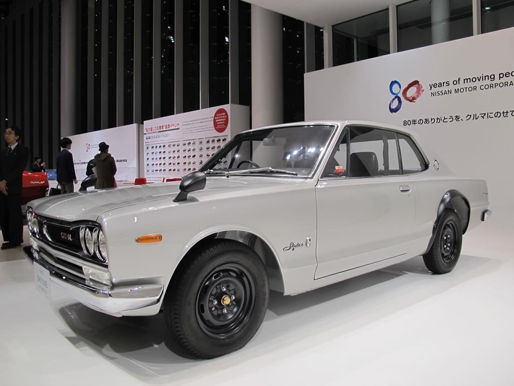
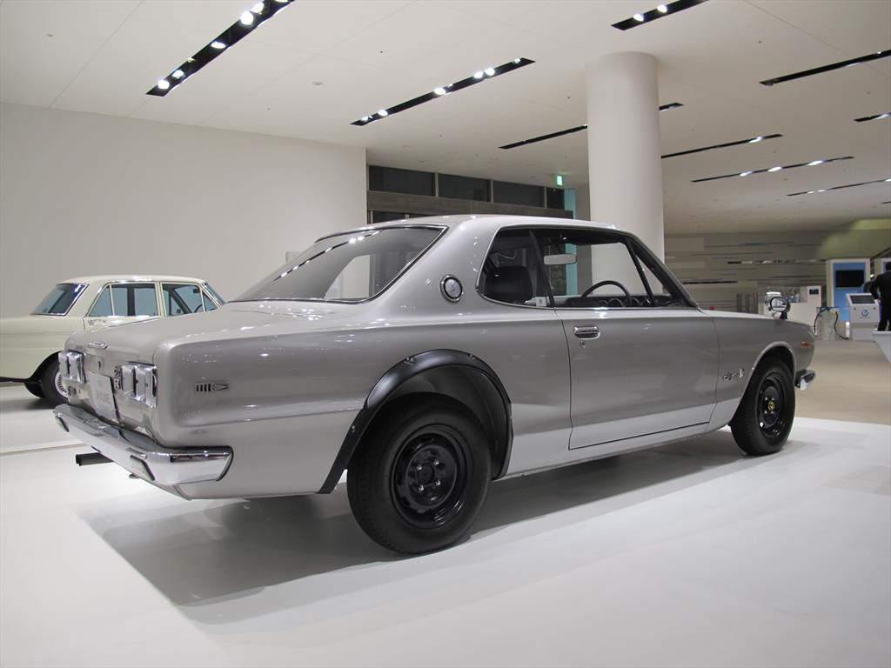

1969-1972
|  |  |
EL ORIGEN DE “GODZILLA”
El primer Skyline GT-R fue una maravillosa berlina
|
En abril de 1957, el primer Skyline fue presentado por Prince Motor Company (antes de fusionarse con Nissan) y comercializado como un coche de lujo en Japón. Contaba con modestos motores de cuatro cilindros y recibió actualizaciones estéticas a lo largo de los años. La segunda generación (S50) se lanzó en septiembre de 1963, aun con un posicionamiento premium. El Skyline de tercera generación (C10), apodado “Hakosuka” se introdujo en 1968. Con la intención de hacer a la berlina nipona un coche con más espíritu RACER, en febrero de 1969 se presentó el primer Nissan Skyline con la insignia GT-R. Sí, el génesis de tan icónico nombre no fue un modelo coupé con carrocería de dos puertas, sino una berlina que se modificó fuertemente para mantener a la marca competitiva en el que sería el actual Campeonato de la Super Fórmula Japonesa. Tan solo 832 unidades fueron construidas en este formato. El Nissan Skyline 2000 GT-R ganó 49 carreras de forma consecutiva de los 52 eventos en los que participó. Se hizo famoso por su velocidad máxima de 200 km/h y su capacidad para cubrir los 400 metros desde parado en 16,1 segundos. Logró su primera victoria en el Gran Premio JAF de 1969. Nissan consiguió un coche con una experiencia de manejo de “GT” (Gran Turismo, cómodo y refinado) como “R” (Racing, con un gran espíritu para el mundo de los circuitos).
Este Nissan Skyline 2000 GT-R, con número de chasis PCG10-000135, tiene 39.270 kilómetros en el odómetro. Su elástico motor asociado a una transmisión manual de cuatro velocidades, junto con un contenido peso gracias a un interior despojado de elementos superfluos, lo tienen que convertir en uno de los sedanes más divertidos que uno pueda conducir. Incluso cuenta con un asiento de tipo buquet (el otro viene por separado), diales adicionales y neumáticos semi-slick.
|